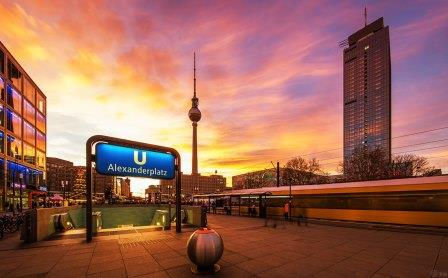

Surfer's Paradise - Australia
AUSTRALIA! Energetic, enthusiastic, electric, eclectic! These are just some of the words that sum up the social scene that Surfers Paradise was built on. Surfers Paradise is the Gold Coast's entertainment and tourism centre and the suburbs high-rise buildings are the best known feature of the city's skyline.

Das allerbeste Land - Deutschland
Bundesrepublik DEUTSCHLAND ist ein föderal verfasster Staat in Mitteleuropa, der aus den 16 deutschen Ländern gebildet wird. Die Bundesrepublik ist ein freiheitlich-demokratischer und sozialer Rechtsstaat[9] und stellt die jüngste Ausprägung des deutschen Nationalstaates dar. Bundeshauptstadt sowie bevölkerungsreichste Stadt ist Berlin.
French Paradise
BIARRITZ is a city on the Bay of Biscay, on the Atlantic coast in the Pyrénées-Atlantiques department in southwestern France, 35 kilometres from the border with Spain. It is a luxurious seaside tourist destination.